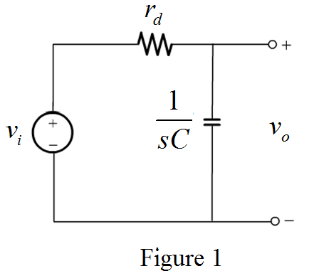
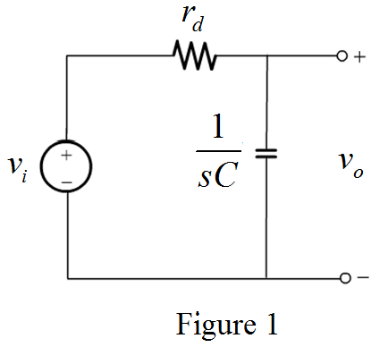

Refer to Figure P4.51 in the textbook.
Calculate the value of diode small signal resistance, .
Substitute  for
for 
Draw the small signal circuit with opened current source.

Refer to Figure P4.51 in the textbook.
Calculate the value of diode small signal resistance, .
Substitute for
Draw the small signal circuit with opened current source.

Apply voltage division rule to calculate the input output relation.
Substitute for  .
.

Calculate the phase between input and output voltages.
Substitute  for
for  ,
,  for
for  and for .
and for .
Thus, the phase between the input and output voltages is given by the relation,
.
Calculate the value of the current,  .
.
Substitute for .
Thus, the value of the current is .
Calculate the phase angle for  .
.
Calculate the phase angle for .
Thus, the range of the phase shift achieved as  varies over the range of 0.1 times to 10 times the value of the current, is.
varies over the range of 0.1 times to 10 times the value of the current, is.